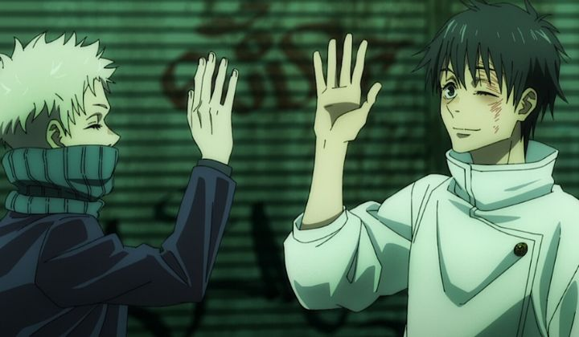

Disclaimer: This review covers the 2021 feature film "Jujutsu Kaisen 0," a spin-off / prequel to the anime series "Jujutsu Kaisen." I have not watched the original series when I wrote this review.OK... how do I write this without getting into trouble...When I think of "shonen" anime (that genre of fun, action-filled, mass-audience franchises), I still think of franchises like "Naruto," "Bleach," and "One Piece" (two of which, as of 2022, are still technically on-going). There's been dozens of other shows, but most of them long forgotten. It's easy to forget how many successes have since taken their places in the past decade for a new generation. We got "Attack on Titan" and "My Hero Academia" (arguably the new "Full Metal Alchemist" and "One Piece"), and years later, we got "Demon Slayer" (the new "Naruto"). And now "Jujutsu Kaisen," which to me resembles a new "Bleach."I haven't yet watched "Kaisen," and don't really plan to. I don't know anything about it, other than the grim character art resembles that horror anime "Parasyte," and that the show features a lot of creepy monsters. I didn't think it was worth paying attention to the feature film "Jujutsu Kaisen 0" when it released in late 2021 / 2022. It's another shonen movie for the fans, fine. But then I saw the box office in North America: it made about $17 million in its opening weekend here, coming second that week in the film listings, behind only "The Batman." It would go on to make over $150 million worldwide. Yes, it's less than half of what "Demon Slayer - Mugen Train" brought in, but that's still big enough a success to make the news, coming close to the top 5 anime films of all time in sales. I felt I owed it a chance to watch. This also gave me a rare chance to go in blind, for this movie to be my first exposure to a hit series. Which is probably not fair, but also allows me to nitpick at a lot of problems that die-hard fans would be blind to.The story of "0" is of a gloomy teenager named Yuta. Skinny and frequently picked on at school, we come to discover that he harbors a demonic curse that protects him against his control (taking care of his bullies in a grisly fashion). The nature of the curse is that Yuta had a childhood friendship and love with a girl named Rika, who dies prematurely in a car accident. But their bond is so strong that Rika remains as Yuta's shadow, a grotesque, grey, boney monster with long teeth and claws, with virtually no human resemblance other than her gargled voice. Yuta resigns himself to be locked away for life (or possibly executed by a society that watches over these things), away from human interaction for their safety, when a mysterious blindfolded man walks in, exclaiming that he'll be attending his school: Jujutsu High. Yes, there's a secret school in the middle of Tokyo where others train to tame or remove curses, in a world where curses are commonplace and stem from the negative energies of the human race. The school works with a secret organization that oversees curse activity throughout Japan. Most of the students don't have curses themsevles in the manner that Yuta does, which gives him an advantage, even though he's well outside his league at first. He's part of a small first year class of three other students, all in similar school uniforms with their personalities to differenciate them by. They're taught by the blindfolded, white-haired, eccentric teacher. One student is a cool, aggresive girl with glasses. Another is a quiet boy that only speaks with words that are sushi ingredients. Another is a giant talking Panda... who wrote this?I was dumbfounded to watch what appeared to be the least inspired anime cast I'd ever seen, all of them one-dimensional and irratating to a fault. Yuta in particular is frustratingly weak in confidence, making Shinji Ikari seem manly (coincidently, both share the same voice actress in Japanese). It was as if the writer had seen nothing but other shonen anime their entire life, and randomly decided to make their own by putting a bunch of tropes in a pot. The dynamic between Yuta and Rika should have been an easy way to sell the heart of the story, but that's glossed over so quickly that there's no time to build emotion.  Even the movie's big bad villain, a long-haired monk with an evil grin, is stupid: he's eager to kill off all humans that don't have the power to control curses like he or the society does. Why? He sees them as no better than monkeys, and is disgusted by them, apparently. The movie tries to sell the duality between his motives and those of the blindfolded teacher, but there's no sense offered to the monk's reasoning: he's trying to start a genocide because he thinks humans are pathetic? I had to read the Wikipedia page to find an alternate explanation, including a much more compelling reason used in the main series, but surely the movie's job is to explain this without my research? And don't get me started on the monk's cronies, who are just as random and eccentric as the good guys are, making me want to throw rotten tomatoes at the screen.Anyway, Yuta trains at the school, goes on a few training missions, learns how to use a sword, and so on, until the final big battle starts. Apparently it take place over several months, although the movie makes it feel like a few days, with no indication of the passage of time. The pacing and editing felt like this was a compliation film of a 6 - 12 episode anime arc, where the best I could say was that I could follow what was happening without prior knowledge of the franchise. Imagine my surprise when I found out this is actually a prequel to a side-character, an original story not seen in the anime. The series' main protagonist doesn't even show up in the movie! That's cool, but surely, if not limited to fill 90% of the film with pre-animated scenes from the series... the writing and pacing should have been a lot better, no? "No Game No Life 0" and "Mugen Train" pulled it off, why not this?The visuals weren't great either. They were good, on par for a modern television anime, but didn't scream "theatrical quality." The movie likes browns and greys too much. Characters look bland thanks to their similar uniforms. Animation was kind of poor. The only high point was the monster designs, which were creative and appropriately creepy. Action scenes with them had a little flourish of passion, but not much. The English dub I saw was merely adequete. Music choices were good though, giving the movie a lot more personality (although, again, inspired by and already done in "Bleach").I was shocked. I had seen a number of original-story shonen films before. Was this the worst I had ever seen? Was this a chance to tear into an anime? I've done that up to now, but wait a moment... the last third of the movie is... fantastic? When the final battle begins in earnest, its as if the writer, director, and animation team had all been replaced with someone who understood what they were working with. The action and choreography is fierce and kinetic. All the characters, including some last-minute cameos I assume are from the main series, are suddenly badass. The animation is exciting, going from 5 out of 10 to 11, then 14, then 19. Yuta and Rika's relationship, not before or after the fight, but during, was edge-of-my-seat captivating. Director Sunghoo Park might not know how to handle story, but he might be the the best in the business when it comes to action. That final act suddenly made me happy to pay the price of admission to see "Jujutsu Kaisen 0." The action and macabre monster designs are cool, I get it now. But it doesn't excuse how terrible the rest of the movie was. Especially after reading the synposis for the early episodes of the main series, and thinking how much better THAT seems to this movie's story. This movie instilled some curiousity, but also calmed me into thinking that I can skip watching the main series. Movies aren't supposed to do that.Having watched anime for a long time, it's interesting to see new shonen franchises capture the popularity of the masses. But I no longer think that writing has gotten that much better in this genre. It's just that budget has. I'd recommend "0" only for existing fans or for the extremely curious, and you'll be treated to a jaw-dropping fight for your time, but there are so many better options to watch in its place, even within the shonen space.
- "Ani" More reviews can be found at : https://2danicritic.github.io/ Previous review: review_Joshiraku Next review: review_Juni_Taisen_-_Zodiac_War